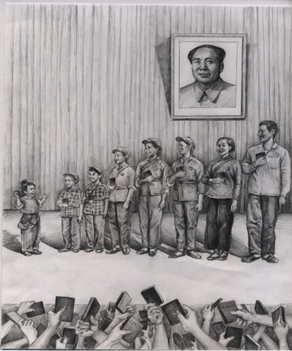

Cửu Bình 8: ĐCSTQ, một tà giáo về bản chất. (audio)
Tài liệu gốc: http://dajiyuan.com/gb/4/12/3/n735942.htm

0 – Dẫn nhập
1 – Đảng cộng sản là gì?
2 – Đảng cộng sản Trung Quốc xuất sinh như thế nào?
3 – Chính quyền bạo lực của Đảng cộng sản Trung Quốc.
4 – Đảng cộng sản, một lực lượng phản vũ trụ.
5 – Giang Trạch Dân và Đảng cộng sản Trung Quốc lợi dụng lẫn nhau để đàn áp Pháp Luân Công.
6 – Đảng cộng sản Trung Quốc phá hoại văn hoá dân tộc.
7 – Lịch sử giết chóc của Đảng cộng sản Trung Quốc.
8 – Bản chất tà giáo của Đảng cộng sản Trung Quốc.
9 – Bản tính lưu manh của Đảng cộng sản Trung Quốc.
Lời mở đầu
|
 |
Sự sụp đổ của khối Xã hội Chủ nghĩa do Liên Xô dẫn đầu vào đầu những năm 90 đã đánh dấu sự thất bại của Chủ nghĩa Cộng sản sau gần một thế kỷ tồn tại. Tuy nhiên, Đảng Cộng sản Trung Quốc (ĐCSTQ) không ngờ đã sống sót và vẫn nắm quyền ở Trung Quốc, một đất nước với 1/5 dân số thế giới. Một câu hỏi tất yếu nảy sinh là: liệu ĐCSTQ ngày nay có còn thật sự đi theo Chủ nghĩa Cộng sản nữa hay không?
Bây giờ không một ai ở Trung Quốc, bao gồm cả các đảng viên, còn tin vào Chủ nghĩa Cộng sản. Sau 50 năm đi theo Chủ nghĩa Xã hội, ĐCSTQ bây giờ đã cho phép tư hữu hóa và thậm chí còn có thị trường chứng khoán. ĐCSTQ còn tìm kiếm đầu tư nước ngoài để thành lập các doanh nghiệp mới, trong khi bóc lột công nhân và nông dân đến mức tối đa. Điều này là hoàn toàn trái ngược với lý tưởng của Chủ nghĩa Cộng sản. Mặc dù đã thỏa hiệp với Chủ nghĩa Tư bản, ĐCSTQ vẫn duy trì quyền thống trị độc tài đối với nhân dân Trung Quốc. Hiến Pháp sửa đổi năm 2004 vẫn cứng ngắc tuyên bố rằng “Nhân dân các dân tộc Trung Quốc sẽ tiếp tục chấp hành chế độ chuyên chính dân chủ nhân dân và đường lối Xã hội Chủ nghĩa dưới sự lãnh đạo của Đảng Cộng sản Trung Quốc và sự dẫn lối của Chủ nghĩa Mác-xít-Lê-nin-nít, ý thức hệ của Mao Trạch Đông, lý luận của Đặng Tiểu Bình và tư tưởng quan trọng về ‘Ba Đại diện’…”
“Con báo đã chết, nhưng vẫn còn lưu lại bộ da” [1]. ĐCSTQ ngày nay chỉ còn lại “bộ da”. ĐCSTQ kế thừa bộ da này và dùng nó để duy trì quyền thống trị Trung Quốc.
Bản chất của bộ da mà ĐCSTQ kế thừa, hay tổ chức của ĐCSTQ là gì?
******************
I. Các đặc điểm mang tính giáo phái của ĐCSTQ
ĐCSTQ về bản chất là một tà giáo làm hại nhân loại
Mặc dù ĐCSTQ chưa bao giờ tự gọi mình là một tôn giáo nhưng nó có tất cả các đặc điểm của một tôn giáo (Bảng 1). Khi mới bắt đầu thành lập, nó coi chủ nghĩa Mác-xít là chân lý tuyệt đối trên thế giới. Nó sùng bái và tôn thờ Mác như vị thánh tinh thần của mình, và hô hào nhân dân tham gia vào một cuộc đấu tranh suốt cuộc đời vì mục đích là xây dựng một “thiên đường cộng sản trên thế giới”.
Bảng 1. Các đặc điểm mang tính tôn giáo của ĐCSTQ.
| Các hình thức cơ bản của một tôn giáo | Các hình thức tương ứng của ĐCSTQ | |
| 1. | Nhà thờ hay bục giảng. | Tất cả các cấp ủy đảng; các bài diễn thuyết trong những buổi họp của đảng cho đến các phương tiện thông tin đại chúng đều bị ĐCSTQ kiểm soát. |
| 2. | Giáo lý. | Chủ nghĩa Mác-xít – Lê-nin-nít, ý thức hệ của Mao Trạch Đông, lý luận của Đặng Tiểu Bình và tư tưởng ‘Ba Đại diện’ của Giang Trạch Dân và Hiến chương của Đảng. |
| 3. | Nghi lễ kết nạp, quy y. | Buổi lễ tuyên thệ trung thành mãi mãi với ĐCSTQ. |
| 4. | Trung thành với một tôn giáo. | Đảng viên chỉ được phép tin vào ĐCSTQ. |
| 5. | Chức sắc: linh mục, thượng toạ, … | Bí thư và nhân viên phụ trách công tác đảng ở các cấp. |
| 6. | Thờ Thần, Phật, … | Báng bổ tất cả các vị thần và sau đó tự suy tôn mình thành một “vị thần” vô danh. |
| 7. | Chết được gọi là “đi lên thiên đường hoặc xuống địa ngục”. | Chết được gọi là “đi gặp Các-Mác”. |
| 8. | Kinh sách. | Học thuyết và các bài viết của những người lãnh đạo đảng. |
| 9. | Giảng đạo. | Các thể loại họp hành và phát biểu của lãnh đạo. |
| 10. | Tụng kinh; học và trau dồi kinh sách. | Học chính trị, họp nhóm thường kỳ hoặc các hoạt động của các đảng viên. |
| 11. | Thánh ca. | Các bài hát ca ngợi đảng. |
| 12. | Đóng phí. | Đảng phí bắt buộc; phân bổ ngân sách nhà nước một cách bắt buộc cho đảng từ mồ hôi và máu của nhân dân. |
| 13. | Giới luật, kỷ luật. | Kỷ luật đảng bao gồm “quản thúc và điều tra tại nhà” và “khai trừ ra khỏi đảng” cho đến các thủ đoạn tra tấn chết người và thậm chí trừng phạt cả người thân và bạn bè. |
ĐCSTQ rất khác biệt với bất cứ một chính giáo nào. Tất cả các chính giáo đều tin vào Thần và từ bi, và có sứ mệnh khuyên bảo con người duy trì đạo đức và cứu rỗi linh hồn. ĐCSTQ không tin vào Thần và đi ngược lại đạo đức truyền thống.
Những việc mà ĐCSTQ đã làm chứng tỏ rằng nó là một tà giáo. Học thuyết của ĐCSTQ dựa trên đấu tranh giai cấp, bạo lực cách mạng và chuyên chính vô sản và đã tạo ra cái gọi là “cách mạng vô sản” đầy máu và bạo lực. Khủng bố đỏ của Chủ nghĩa Cộng sản đã kéo dài khoảng một thế kỷ, đem đến tai họa cho hàng chục nước trên thế giới và cướp đi sinh mạng của hàng chục triệu con người. Lý tưởng cộng sản đã tạo ra địa ngục trần gian và không có gì khác hơn là một tà giáo tà ác nhất trên thế giới.
Bản chất tà giáo của ĐCSTQ được tóm tắt dưới sáu mục sau:
1. Sự hình thành học thuyết và việc diệt trừ những người bất đồng chính kiến
ĐCSTQ lấy chủ nghĩa Mác-xít làm học thuyết tôn giáo và khoe trương nó như là “chân lý không thể phá vỡ.” Học thuyết của ĐCSTQ không có từ tâm và lòng khoan dung. Thay vào đó, nó mang đầy tính ngạo mạn. Chủ nghĩa Mác-xít là một sản phẩm của giai đoạn đầu của chủ nghĩa tư bản khi năng suất lao động vẫn còn thấp và khoa học vẫn còn kém phát triển. Nó không hề có một hiểu biết đúng đắn về các mối quan hệ giữa con người và xã hội hay giữa con người và thiên nhiên. Không may là, tư tưởng dị giáo này đã phát triển thành một phong trào cộng sản quốc tế và đã làm hại nhân thế trong suốt hơn một thế kỷ, trước khi mọi người vứt bỏ nó sau khi đã phát hiện ra rằng trên thực tế nó hoàn toàn sai lầm.
Những người lãnh đạo đảng từ thời Lê-nin đã liên tục sửa đổi học thuyết của giáo phái đó. Từ lý luận của Lê-nin về bạo lực cách mạng cho đến học thuyết của Mao Trạch Đông về liên tục cách mạng dưới chế độ chuyên chính vô sản, đến “Ba đại diện” của Giang Trạch Dân, lịch sử của ĐCSTQ đầy rẫy những học thuyết và ảo tưởng dị giáo như thế. Mặc dù những học thuyết này đã liên tục gây ra những tai họa trên thực tế và tự bản thân chúng là mâu thuẫn lẫn nhau, nhưng ĐCSTQ vẫn tự tuyên bố rằng nó hoàn toàn đúng đắn và bắt buộc nhân dân phải học các học thuyết của nó.
Việc tiêu diệt những người bất đồng chính kiến là phương tiện hữu hiệu nhất để tà giáo cộng sản đó phổ biến học thuyết của nó. Bởi vì học thuyết và hành xử của tà giáo này quá lố bịch, ĐCSTQ phải bắt buộc nhân dân chấp nhận chúng, và dựa vào bạo lực để tiêu diệt những người bất đồng chính kiến. Sau khi ĐCSTQ giành được chính quyền ở Trung Quốc, nó bắt đầu việc thực hiện “cải cách ruộng đất” để tiêu diệt những người chủ sở hữu đất đai (địa chủ), “cải cách xã hội chủ nghĩa” trong công nghiệp và thương nghiệp để tiêu diệt các nhà tư sản, “phong trào tiêu diệt các phần tử phản động” để tiêu diệt những tôn giáo truyền thống và những người nắm quyền trước khi ĐCSTQ giành được chính quyền, “phong trào chống cánh hữu” để bịt miệng những người trí thức và “Đại Cách mạng Văn hóa” để tiêu diệt Văn hóa truyền thống dân tộc của Trung Quốc. ĐCSTQ có thể thống nhất Trung Quốc dưới tà giáo cộng sản và đạt được một tình thế mà trong đó tất cả mọi người đều phải đọc Sách Đỏ, nhảy “điệu trung thành” và “xin ý kiến chỉ đạo của đảng vào buổi sáng và báo cáo với đảng vào buổi tối.” Vào thời kỳ sau chế độ của Mao Trạch Đông và Đặng Tiểu Bình, ĐCSTQ cho rằng Pháp Luân Công, một phương pháp tu luyện truyền thống tin vào “Chân Thiện Nhẫn” sẽ cạnh tranh với đảng để thu hút quần chúng và do đó nó có ý định tiêu diệt Pháp Luân Công. Do đó nó đã bắt đầu một cuộc đàn áp mang tính diệt chủng đối với Pháp Luân Công cho đến tận bây giờ.
2. Đề cao việc tôn thờ lãnh tụ và các quan điểm tuyệt đối hóa
Từ Các-Mác cho đến Giang Trạch Dân, chân dung của những người lãnh đạo Đảng Cộng sản luôn luôn được treo lên để tôn thờ. Quyền lực tuyệt đối của những người lãnh đạo ĐCSTQ nghiêm cấm bất cứ một thách thức nào. Mao Trạch Đông được dựng lên làm “mặt trời đỏ” và “người giải phóng vĩ đại”. ĐCSTQ tán dương một cách lố bịch những bài viết của Mao Trạch Đông, nói rằng “một câu nói của Mao Trạch Đông bằng 10 nghìn câu của một người thường”. Với tư cách là “một đảng viên bình thường”, Đặng Tiểu Bình đã từng thống lĩnh chính trị Trung Quốc như một lãnh chúa. Học thuyết “Ba đại diện” của Giang Trạch Dân chỉ dài có hơn 40 chữ một chút cộng cả dấu chấm nhưng Phiên họp toàn thể lần thứ tư đã thổi phồng lên là “đem đến câu trả lời sáng tạo cho những vấn đề như chủ nghĩa xã hội là gì, làm thế nào để xây dựng chủ nghĩa xã hội, chúng ta xây dựng loại đảng nào và xây dựng đảng như thế nào.” ĐCSTQ cũng tán dương thái quá về tư tưởng “Ba đại diện”, mặc dù trong trường hợp này thực chất là chế nhạo nó khi nói rằng nó là sự tiếp nối và phát triển của chủ nghĩa Mác Lê-nin, tư tưởng Mao Trạch Đông và học thuyết Đặng Tiểu Bình.
Việc giết những người vô tội một cách vô nhân đạo của Xta-lin, “Đại Cách mạng Văn hóa” mang tính hủy diệt của Mao Trạch Đông, lệnh thảm sát các sinh viên trên quảng trường Thiên An Môn của Đặng Tiểu Bình và cuộc đàn áp Pháp Luân Công vẫn còn đang tiếp diễn của Giang Trạch Dân là những kết quả rùng rợn của chế độ độc tài tà giáo của ĐCSTQ.
Một mặt, ĐCSTQ ban hành Hiến Pháp, “Tất cả quyền lực trong Nước Cộng hòa Nhân dân Trung hoa thuộc về nhân dân. Các cơ quan mà thông qua đó nhân dân thực thi quyền lực nhà nước là Quốc hội và Hội đồng Nhân dân các cấp”. “Không có một tổ chức hay cá nhân nào được quyền đứng trên Hiến pháp và Pháp luật.” [2] Mặt khác, Hiến chương của ĐCSTQ tuyên bố rằng ĐCSTQ là nòng cốt lãnh đạo của sự nghiệp xã hội chủ nghĩa mang màu sắc Trung Quốc, vượt trên cả đất nước và nhân dân. Chủ tịch Ủy ban thường vụ Quốc hội đã có “những bài phát biểu quan trọng” trên khắp cả nước nói rằng Quốc hội, cơ quan quyền lực cao nhất của nhà nước, phải tuân theo sự lãnh đạo của ĐCSTQ. Theo nguyên tắc “tập trung dân chủ” của ĐCSTQ, thì toàn đảng phải tuân theo Ban chấp hành Trung ương. Bản chất là, điều mà Quốc hội thực sự nhấn mạnh là quyền lực độc tài của Tổng Bí thư được bảo vệ dưới hình thức luật pháp.
3. Cưỡng bức tẩy não, kiểm soát tư tưởng, tổ chức nghiêm ngặt và không được ra khỏi đảng sau khi đã được kết nạp
Tổ chức của ĐCSTQ rất là nghiêm ngặt: cần phải có đủ giới thiệu của 2 đảng viên thì mới được kết nạp đảng; đảng viên mới phải thề trung thành với đảng mãi mãi sau khi được kết nạp; đảng viên phải đóng đảng phí, tham dự các hoạt động do đảng tổ chức, và tham gia học chính trị tập thể. Các tổ chức đảng xuyên suốt tất cả các cấp chính quyền. Các tổ chức địa phương của ĐCSTQ có mặt ở tất cả các làng, thị trấn… ĐCSTQ kiểm soát không chỉ các đảng viên và các công tác đảng mà cả những người không phải là đảng viên bởi vì toàn xã hội phải “tuân theo sự lãnh đạo của đảng”. Trong những năm khi mà các chiến dịch đấu tranh giai cấp đang diễn ra, các “linh mục” của tôn giáo ĐCSTQ, gọi là các bí thư ở tất cả các cấp thường là không biết chính xác là bản thân họ đang làm gì ngoài việc bắt mọi người phải tuân theo kỷ luật.
“Phê bình và tự phê bình” trong các cuộc họp đảng là biện pháp thường thấy và không bao giờ dứt nhằm kiểm soát tư tưởng của các đảng viên. Trong lịch sử, ĐCSTQ đã phát động nhiều phong trào để “thanh lọc các đảng viên”, “chỉnh đốn không khí đảng”, “bắt những kẻ phản bội”, “thanh trừ những người chống bôn-sê-vích (AB đoàn) [3]” và “đề cao kỷ luật đảng”, định kỳ thử thách “ý thức về đảng tính” – có nghĩa là dùng bạo lực và khủng bố để thử thách sự tận tụy của các đảng viên đối với đảng đồng thời đảm bảo rằng họ sẽ mãi mãi trung thành với đảng.
Việc gia nhập ĐCSTQ cũng tương tự như là ký một hợp đồng bán cả thể xác và linh hồn mà không thể hủy bỏ. Kỷ luật đảng luôn luôn đứng trên pháp luật của nhà nước, ĐCSTQ có thể tùy ý khai trừ ra khỏi đảng bất cứ một đảng viên nào trong khi các đảng viên thì lại không thể ra khỏi đảng mà không bị trừng phạt nghiêm trọng. Việc xin ra khỏi đảng bị coi là không trung thành và sẽ đưa đến những hậu quả tai hại. Trong thời kỳ Đại Cách mạng Văn hóa khi giáo phái ĐCSTQ nắm quyền lực tuyệt đối, ai cũng biết rằng nếu đảng muốn ai phải chết thì người đó sẽ không thể sống, nếu đảng muốn ai phải sống thì người đó không được phép chết. Nếu một người mà tự tử thì người đó sẽ bị dán nhãn là “sợ bị nhân dân trừng phạt vì những tội lỗi của mình” và người nhà của họ cũng sẽ bị liên lụy và bị trừng phạt.
Quá trình ra quyết định trong đảng hoạt động như một hộp đen và các cuộc đấu tranh trong nội bộ đảng phải được giữ bí mật tuyệt đối. Tất cả các tài liệu của đảng đều là bí mật. Sợ bị nhân dân phát hiện ra các hành động tội ác của mình, ĐCSTQ thường xuyên xử lý những người bất đồng chính kiến bằng cách gán cho họ tội “tiết lộ bí mật quốc gia”.
4. Kích động bạo lực, tàn sát và hy sinh cho đảng
Mao Trạch Đông nói, “Một cuộc cách mạng không phải là một bữa tiệc tối, hay viết một bài văn, hay vẽ một bức tranh, hay là làm công việc thêu thùa; nó không thể tao nhã như vậy, nhẹ nhàng và nhàn hạ như vậy, ôn hòa, tử tế, lịch thiệp, dè dặt và cao thượng như vậy. Một cuộc cách mạng là một cuộc nổi dậy, một hành động bạo lực mà nhờ đó giai cấp này lật đổ giai cấp khác.”[4]
Đặng Tiểu Bình nói, “Giết chết 200 nghìn người để đổi lấy 20 năm ổn định”.
Giang Trạch Dân ra lệnh, “Hủy hoại thân thể (các học viên Pháp Luân Công), bôi nhọ thanh danh, vắt kiệt tài chính.”
ĐCSTQ đã kích động bạo lực và giết chết vô số người trong suốt các phong trào chính trị trước kia của nó. Nó giáo dục nhân dân phải đối xử với kẻ thù “lạnh lùng như mùa đông khắc nghiệt”. Lá cờ đỏ được lấy màu đỏ để tượng trưng cho sự “nhuộm máu của những người cảm tử.” ĐCSTQ tôn thờ màu đỏ bởi vì nó khát máu và tàn sát.
ĐCSTQ thường nêu cao những tấm gương anh hùng để khuyến khích mọi người hy sinh cho đảng. Khi Trương Tư Đức chết trong lúc đang làm việc trong lò sản xuất thuốc phiện, Mao Trạch Đông đã ca ngợi cái chết đó là “nặng như Núi Thái sơn [5].” Trong những năm điên cuồng đó, “những lời dũng cảm” như “Không sợ gian khổ hy sinh” và “Sự hy sinh cay đắng làm mạnh thêm quyết tâm táo bạo; chúng ta dám làm mặt trời và mặt trăng chiếu sáng những khung trời mới” đã đem lại khát vọng trong khi thiếu thốn trầm trọng về mặt vật chất.
Vào cuối những năm 70, Đảng Cộng sản Việt Nam đưa quân đi lật đổ chế độ Khơ me Đỏ do ĐCSTQ ủng hộ và gây ra các tội ác tầy trời. Mặc dù ĐCSTQ rất điên tiết nhưng lại không thể đưa quân đến hỗ trợ Khơ me Đỏ vì Trung Quốc và Cam-pu-chia không có chung đường biên giới. Thay vào đó, ĐCSTQ đã bắt đầu một cuộc chiến tranh xâm lược Việt Nam dọc biên giới Việt-Trung để trừng phạt Cộng sản Việt Nam dưới chiêu bài “tự vệ”. Hàng chục nghìn lính Trung Quốc vì đó mà đã hy sinh cả máu và mạng sống của mình cho cuộc chiến tranh giữa các đảng cộng sản. Những cái chết của họ trên thực tế là không liên quan gì đến lãnh thổ và chủ quyền. Vậy mà, vài năm sau, ĐCSTQ lại còn trâng tráo gợi nhớ lại sự hy sinh vô nghĩa của bao nhiêu thanh niên khờ dại như là “tinh thần anh hùng cách mạng”, mượn lời từ bài hát “hành động đẹp đẽ nhuộm máu”. Mặc dù 154 lính cảm tử của Trung Quốc đã chết năm 1981 trong khi chiếm lại đỉnh núi Faka ở tỉnh Quảng Tây, nhưng ĐCSTQ đã tùy tiện trả nó lại cho Việt Nam khi hai bên phân định lại đường biên giới.
Khi bệnh dịch SARS đang đe dọa tính mạng của nhân dân hồi đầu năm 2003, ĐCSTQ sẵn sàng nhận thêm các nữ y tá trẻ. Những nữ y tá này sau đó đã nhanh chóng bị bắt buộc phải ở lại trong các bệnh viện để chăm sóc những bệnh nhân SARS. ĐCSTQ đã đẩy những người còn trẻ tuổi vào những nơi nguy hiểm nhất để tạo dựng “hình ảnh vinh quang” “không sợ gian khổ hy sinh” của đảng. Tuy nhiên, ĐCSTQ đã không có lời giải thích nào về việc những người khác trong số 65 triệu đảng viên hiện thời đã ở đâu vào lúc đó và họ đã đem lại hình ảnh như thế nào cho ĐCSTQ.
5. Phủ định đức tin vào thần thánh và bóp chết bản tính con người
ĐCSTQ truyền bá tư tưởng vô thần và nói rằng tôn giáo là “thuốc phiện tinh thần” có thể đầu độc con người. Nó dùng quyền lực của mình để đè bẹp tất cả các tôn giáo ở Trung Quốc và sau đó tự phong thần cho mình, trao quyền lực tuyệt đối cai trị đất nước cho giáo phái ĐCSTQ.
Cùng lúc với việc ĐCSTQ đàn áp các tôn giáo, nó cũng phá hoại văn hóa truyền thống. Đảng nói rằng truyền thống, đạo đức và luân lý là phong kiến, mê tín và phản động và tiêu hủy tất cả dưới danh nghĩa cách mạng. Trong thời kỳ Đại Cách mạng Văn hóa, các hiện tượng xấu tràn lan đi ngược lại truyền thống của Trung Quốc, như vợ chồng tố cáo lẫn nhau, học sinh đánh các thầy cô giáo, bố con thù địch nhau, hồng vệ binh bừa bãi giết hại những người dân thường vô tội, và quân nổi loạn đánh đập, đập phá và cướp bóc. Đây là những hậu quả tất yếu của việc ĐCSTQ bóp chết bản tính con người.
Sau khi thành lập chế độ, ĐCSTQ đã bắt buộc các dân tộc thiểu số phải cam kết trung thành với sự lãnh đạo của ĐCSTQ, làm tổn hại nền văn hóa dân tộc lâu đời giàu có và đa sắc màu của họ.
Ngày 4/6/1989, cái gọi là “Quân đội Giải phóng Nhân dân” đã thảm sát rất nhiều sinh viên ở Bắc Kinh. Vụ việc này đã làm cho người dân Trung Quốc mất hết hy vọng vào tương lai chính trị của Trung Quốc. Từ đó trở đi, nhân dân chỉ còn tập trung vào việc kiếm tiền. Từ năm 1999 cho đến nay, ĐCSTQ đã đàn áp rất dã man đối với các học viên Pháp Luân Công, và đã đi ngược lại với “Chân Thiện Nhẫn”. Từ đó Đảng đã gây ra một sự suy đồi nhanh chóng về chuẩn mực đạo đức.
Kể từ khi bắt đầu thế kỷ mới này, một chiến dịch mới, bất hợp pháp thu hồi đất đai và chiếm đoạt tiền của đã làm cho rất nhiều người dân trở nên bần cùng và vô gia cư. Số người kháng nghị lên chính quyền đòi giải quyết những bất công mà họ phải gánh chịu đã tăng đột biến và xung đột xã hội đã gia tăng. Những cuộc biểu tình phản đối trên diện rộng diễn ra thường xuyên, và đã bị cảnh sát và quân đội đàn áp rất dã man. Bản tính phát-xít của “Nhà nuớc Cộng hòa” đã trở nên rõ rệt, và xã hội đã mất đi chuẩn mực đạo đức và lương tâm.
Trước kia, một kẻ ác không bao giờ làm hại hàng xóm láng giềng, hay, “cáo chỉ săn mồi ở xa nhà”. Bây giờ, khi mọi người muốn lừa đảo ai đó, họ sẽ nhằm vào họ hàng và bè bạn của chính mình và điều đó được gọi là “càng quen càng lèn cho đau”.
Trong qua khứ, người dân Trung Quốc quý trọng chữ trinh hơn tất cả mọi thứ khác, còn ngày nay mọi người khinh người nghèo chứ không khinh gái bán dâm. Quá trình hủy hoại nhân tính và đạo đức ở Trung Quốc đã được mô tả sống động trong các câu sau:
“Trong những năm 50 mọi người giúp đỡ lẫn nhau,
Trong những năm 60 mọi người đấu tranh với nhau,
Trong những năm 70 mọi người lừa đảo lẫn nhau,
Trong những năm 80 mọi người chỉ lo cho chính mình,
Trong những năm 90 mọi người lợi dụng bất cứ ai mà họ gặp”.
6. Dùng quân đội để chiếm quyền lực, độc quyền hóa nền kinh tế và các tham vọng điên cuồng về chính trị và kinh tế
Mục đích duy nhất của việc thành lập ĐCSTQ là để cướp chính quyền bằng bạo lực và sau đó tạo ra một hệ thống sở hữu nhà nước trong đó nhà nước nắm giữ độc quyền trong nền kinh tế bao cấp. Tham vọng điên cuồng của ĐCSTQ đã vượt xa các tà giáo khác mà thông thường chỉ có mục đích trục lợi.
Trong một đất nước sở hữu công cộng xã hội chủ nghĩa do đảng cộng sản nắm quyền, các tổ chức đảng có quyền lực rất lớn, có nghĩa là các chi bộ đảng ở các cấp nắm quyền hoặc sở hữu các cơ sở hạ tầng của nhà nước. Các tổ chức đảng kiểm soát bộ máy nhà nước và rút tiền trực tiếp từ ngân sách của nhà nước ở các cấp. Như một con ma cà rồng, ĐCSTQ đã hút một lượng tiền của khổng lồ của đất nước.
******************
II. Những tàn phá mà giáo phái Đảng Cộng Sản Trung Quốc đã gây ra
Khi những vụ như giáo phái Aum Shinri Kyo (Chân lý tối thượng) giết người bằng khí độc hủy hoại thần kinh sa-rin, những người theo giáo phái Ngôi chùa Mặt trời tự sát để đi lên thiên đường, hay vụ tự sát tập thể của hơn 900 người theo giáo phái “Ngôi chùa của mọi người” do Jim Jones lập ra được nhắc đến, tất cả mọi người đều run lên vì sợ và căm phẫn. Tuy nhiên, ĐCSTQ là một tà giáo đã gây ra những tội ác còn rùng rợn hơn gấp hàng nghìn lần, làm hại tính mạng của không biết bao nhiêu người. Điều này là bởi vì ĐCSTQ có những đặc tính duy nhất sau đây mà một tà giáo bình thường không có.
Tà giáo ĐCSTQ đã trở thành một quốc giáo
Ở phần lớn các nước khác, nếu ai đó không theo một tôn giáo nào đó thì người đó vẫn có thể có một cuộc sống hạnh phúc với đầy đủ nhân quyền mà không phải đọc những kinh sách hay nghe những giáo lý của tôn giáo đó. Tuy nhiên, ở Trung Quốc, người ta không thể sống ở đó mà không phải thường xuyên bị nhồi nhét vào đầu những học thuyết và tuyên truyền của giáo phái ĐCSTQ bởi vì tà giáo ĐCSTQ đã tự biến mình thành một quốc giáo kể từ khi nó cướp được chính quyền.
ĐCSTQ bắt đầu nhồi nhét những học thuyết chính trị của nó vào đầu mọi người kể từ khi họ còn ở trong trường mẫu giáo và tiểu học. Người ta không thể được học cao hơn hay được thăng chức nếu không vượt qua được môn thi về chính trị. Không một câu hỏi nào trong môn thi chính trị cho phép người thi được suy nghĩ độc lập. Những người thi bắt buộc phải ghi nhớ các câu trả lời mẫu của ĐCSTQ nếu muốn thi đỗ. Những người dân Trung Quốc không may mắn bị bắt buộc phải nhắc lại những giáo huấn của ĐCSTQ từ khi họ còn nhỏ, bị buộc phải liên tục tự tẩy não mình. Khi một cán bộ được thăng chức trong cơ quan nhà nước, bất kể người đó có phải là đảng viên ĐCSTQ hay không, họ bắt buộc phải học chính trị về đảng cộng sản. Người đó sẽ không được thăng chức nếu không đạt yêu cầu tốt nghiệp của học viện chính trị.
Ở Trung Quốc, nơi mà ĐCSTQ là quốc giáo, những người bất đồng quan điểm không được phép tồn tại. Thậm chí “các đảng dân chủ” do ĐCSTQ dựng lên để làm bình phong chính trị và “Nhà thờ Tam tự” (có nghĩa là tự quản, tự lực và tự phát triển) cũng bắt buộc phải chính thức công nhận vai trò lãnh đạo của ĐCSTQ. Trung thành với ĐCSTQ là điều kiện tiên quyết trước khi người dân muốn theo bất cứ một tín ngưỡng nào khác, theo như điều kiện bắt buộc của giáo phái ĐCSTQ.
Kiểm soát xã hội một cách cực đoan
Tà giáo này có thể trở thành quốc giáo là vì ĐCSTQ có toàn quyền kiểm soát đối với toàn bộ xã hội và cướp đi quyền tự do của nhân dân. Kiểu kiểm soát này là chưa từng có trong lịch sử từ trước đến nay, bởi vì ĐCSTQ đã cướp đi của nhân dân tài sản riêng, trong khi tư hữu là một nền tảng của tự do. Trước những năm 80, người dân ở các khu vực thành thị chỉ có thể kiếm sống bằng cách làm việc trong một cơ quan do ĐCSTQ kiểm soát. Nông dân ở nông thôn phải sống dựa vào đất nông nghiệp thuộc quyền sở hữu của các hợp tác xã của ĐCSTQ. Không ai có thể thoát khỏi tầm kiểm soát của ĐCSTQ. Trong một đất nước xã hội chủ nghĩa như Trung Quốc, các tổ chức của đảng cộng sản có mặt ở khắp nơi – từ chính quyền trung ương cho đến địa phương bao gồm cả các làng xã và khu phố. Thông qua các đảng bộ của ĐCSTQ ở tất cả các cấp, ĐCSTQ duy trì quyền kiểm soát tuyệt đối đối với xã hội. Việc kiểm soát chặt chẽ đến như vậy đã hoàn toàn bóp nghẹt quyền tự do cá nhân – quyền tự do đi lại (thông qua hệ thống đăng ký hộ khẩu hộ tịch), quyền tự do ngôn luận (500 nghìn người hữu khuynh đã bị đàn áp trong lịch sử chỉ bởi vì họ đã thực hiện quyền tự do ngôn luận của mình), quyền tự do tư tưởng (Lâm Chiêu và Trương Chí Tân [7] đã bị tử hình vì nghi ngờ ĐCSTQ) và quyền tự do về thông tin (đọc sách “cấm” hay nghe đài “địch” bị coi là phạm pháp; vào Internet cũng bị theo dõi).
Người ta có thể nói rằng hiện nay ĐCSTQ đã cho phép tư hữu cá nhân nhưng chúng ta không nên quên rằng chính sách cải cách và mở cửa này chỉ được đưa ra khi chủ nghĩa xã hội đã đến lúc mà nhân dân đã không còn đủ ăn và nền kinh tế của đất nước đã ở bên bờ sụp đổ. ĐCSTQ đã phải lùi một bước để tự cứu mình khỏi bị sụp đổ. Tuy nhiên, ngay cả sau khi cải cách và mở cửa, ĐCSTQ cũng vẫn chưa bao giờ nới lỏng việc kiểm soát nhân dân của nó. Cuộc đàn áp dã man đối với các học viên Pháp Luân Công đang diễn ra chỉ có thể xảy ra ở một đất nước do đảng cộng sản thống trị. Một khi ĐCSTQ đã trở thành một thế lực kinh tế, điều không tránh được là ĐCSTQ sẽ củng cố việc kiểm soát của nó đối với nhân dân Trung Quốc.
Chủ trương dùng bạo lực và coi thường mạng sống
Hầu như tất cả các tà giáo đều điều khiển những tín đồ hoặc chống lại các áp lực bên ngoài thông qua con đường bạo lực. Tuy nhiên, chỉ có một vài tà giáo đã từng viện đến các phương tiện bạo lực đến một cấp độ như ĐCSTQ đã từng làm mà không hề hối hận. Thậm chí tổng số người đã bị chết vì tất cả các tà giáo khác trên thế giới cũng không thể so sánh được với số người đã bị ĐCSTQ giết hại. Giáo phái ĐCSTQ coi con người chỉ như là một phương tiện để đạt được mục đích của mình và giết chóc chỉ là một phương tiện khác. Do đó, ĐCSTQ đã không đắn đo ngần ngại gì trong việc đàn áp nhân dân. Bất cứ một ai kể cả những người ủng hộ đảng, các đảng viên và những người lãnh đạo của ĐCSTQ đều có thể trở thành mục tiêu đàn áp của chính ĐCSTQ.
ĐCSTQ ủng hộ Khơ-me Đỏ, một trường hợp điển hình của sự tàn bạo và coi rẻ nhân mạng của đảng cộng sản. Nhờ cảm hứng và chỉ đạo của Mao Trạch Đông mà chỉ trong vòng có 3 năm 8 tháng cầm quyền, Đảng Cộng sản Cam-pu-chia do Pol Pot cầm đầu đã giết chết 2 triệu người – khoảng một phần tư dân số của đất nước nhỏ bé này – nhằm “phá bỏ hệ thống tư hữu”. Trong tổng số người chết có hơn 200 nghìn người gốc Hoa.
Để ghi lại những tội ác của Đảng Cộng sản và tưởng niệm các nạn nhân, Cam-pu-chia đã thành lập một viện bảo tàng để ghi lại và trưng bày sự tàn bạo của Khơ-me Đỏ. Viện bảo tàng này được đặt tại một nhà tù cũ của Khơ-me Đỏ. Đầu tiên nó là một trường học bị Pol-Pot dùng làm Nhà tù S-21 để đối phó đặc biệt với các tù nhân gan dạ. Rất nhiều trí thức đã bị giam giữ ở đó và bị tra tấn đến chết. Cùng được trưng bày với các bức tường nhà tù và các loại dụng cụ tra tấn là các bức ảnh đen trắng của những nạn nhân trước lúc họ bị giết chết. Có rất nhiều cách tra tấn đã được ghi lại như cắt cổ, khoan sọ, trẻ em bị ném xuống đất và bị giết chết v.v… Được biết là tất cả các cách tra tấn này đều được “các chuyên gia và các kỹ thuật viên chuyên nghiệp” do ĐCSTQ gửi đến để hỗ trợ Khơ-me Đỏ truyền dạy. ĐCSTQ thậm chí còn đào tạo những người chụp ảnh để chuyên chụp ảnh các tù nhân trước lúc họ bị giết chết để lưu lại làm hồ sơ hoặc là để giải trí.
Chính tại Nhà tù S-21 này, một chiếc máy khoan sọ người đã được thiết kế để lấy não người làm thức ăn bổ dưỡng cho những người lãnh đạo Đảng Cộng sản Cam-pu-chia. Những tù nhân gan dạ bị trói vào một chiếc ghế đặt trước chiếc máy khoan sọ người. Nạn nhân sẽ phải chịu đựng nỗi sợ hãi đến tột cùng khi chiếc mũi khoan quay nhanh chọc thủng sọ từ phía sau gáy và lấy não ra một cách nhanh chóng trước khi nạn nhân chết.
******************
III. Bản chất tà giáo của Đảng Cộng sản
Điều gì đã khiến cho Đảng Cộng sản tà ác và hung bạo như vậy? Khi bóng ma của Đảng Cộng sản đến thế giới này, nó đã mang theo một sứ mệnh lạnh gáy. Bản tuyên ngôn Cộng sản có một đoạn rất nổi tiếng là:
Những người Cộng sản không thèm che đậy mục đích và quan điểm của mình. Họ công khai tuyên bố rằng các mục đích cuối cùng của họ chỉ có thể đạt được bằng cách dùng bạo lực để lật đổ tất cả các điều kiện xã hội hiện có. Hãy để cho các giai cấp thống trị run sợ vì cách mạng vô sản. Những người vô sản không có gì để mất ngoài xiềng xích của mình. Họ có cả thế giới để chinh phục.
Sứ mệnh của bóng ma này là dùng bạo lực để công khai thách thức xã hội loài người, để đập nát thế giới cũ, “để tiêu diệt quyền tư hữu cá nhân”, “để tiêu diệt đặc điểm, sự độc lập và tự do của giai cấp tư sản”, để chấm dứt sự bóc lột, để tiêu diệt các gia đình, và để những người vô sản thống trị thế giới.
Cái đảng chính trị công khai tuyên bố ước muốn “đánh đập, tàn phá và cướp bóc” này không những đã không thừa nhận rằng quan điểm của nó là tà ác, mà còn tự cho mình là đúng khi tuyên bố trong Bản tuyên ngôn Cộng sản rằng “Cách mạng vô sản là sự dứt bỏ cơ bản nhất khỏi các mối quan hệ truyền thống; không ngạc nhiên rằng sự phát triển của nó liên quan đến sự dứt bỏ cơ bản nhất khỏi các tư tưởng truyền thống.”
Các tư tưởng truyền thống là từ đâu đến? Chiểu theo quy luật tự nhiên theo quan điểm vô thần, các tư tưởng truyền thống đến một cách tự nhiên từ các quy luật tự nhiên và xã hội. Chúng là kết quả của các vận động có hệ thống của vũ trụ. Tuy nhiên, theo những người có đức tin vào thần thánh thì truyền thống và các chuẩn mực đạo đức của nhân loại là do thần thánh truyền cho con người. Bất kể là xuất phát từ đâu, chuẩn mực tối căn bản của đạo đức nhân loại, các quy tắc hành xử, và tiêu chuẩn để phân biệt tốt xấu là tương đối ổn định; nó là cơ sở cho việc hành xử của con người và duy trì trật tự xã hội trong hàng nghìn năm qua. Nếu nhân loại đánh mất đi các chuẩn mực đạo đức và tiêu chuẩn để phân biệt tốt xấu thì chẳng phải là con người sẽ suy thoái trở thành động vật hay sao? Khi Bản tuyên ngôn Cộng sản tuyên bố rằng nó sẽ “dứt bỏ từ căn bản khỏi các tư tưởng truyền thống”, nó đã đe dọa đến cơ sở cho sự tồn tại bình thường của xã hội nhân loại. Đảng cộng sản có khuynh hướng trở thành một tà giáo đem đến sự hủy diệt cho loài người.
Toàn bộ văn kiện của Bản tuyên ngôn Cộng sản đã đưa ra các nguyên tắc chỉ đạo cho đảng cộng sản tràn đầy những tuyên bố cực đoan mà không có một chút tử tế và khoan dung nào. Các-Mác và Ăng-ghen nghĩ rằng họ đã tìm ra quy luật phát triển xã hội thông qua chủ nghĩa duy vật biện chứng. Do đó, với “chân lý” trong tay, họ đã nghi ngờ tất cả và phủ định tất cả. Họ đã ngang bướng áp đặt Chủ nghĩa Cộng sản đầy ảo tưởng lên nhân dân và đã không ngần ngại trong chủ trương dùng bạo lực để phá hoại các cấu trúc xã hội và nền tảng văn hóa hiện có. Bản tuyên ngôn Cộng sản được nhồi nhét vào Đảng Cộng sản vừa mới ra đời là một bóng ma tà ác chống lại đạo trời, hủy hoại nhân tính, ngạo mạn, cực kỳ ích kỷ và tuyệt đối không còn kiêng nể gì nữa.
******************
IV. Lý thuyết về ‘ngày tận thế’ của Đảng cộng sản – Nỗi lo sợ về ngày tàn của Đảng
Các-Mác và Ăng-ghen đã tiêm nhiễm một bóng ma tà ác vào trong Đảng Cộng sản. Lê-nin thành lập Đảng Cộng sản ở Nga và, thông qua con đường bạo lực của những kẻ lưu manh vô lại, ông ta đã lật đổ chính phủ chuyển tiếp được thành lập sau Cách mạng tháng Hai, [8] bỏ dở cách mạng tư sản ở Nga, cướp chính quyền, và đã giành được một chỗ đứng cho giáo phái Cộng sản. Tuy nhiên, sự thành công của Lê-nin đã không giúp được những người vô sản chinh phục thế giới. Hoàn toàn ngược lại, như trong đoạn đầu tiên của Bản tuyên ngôn Cộng sản đã nói, “Tất cả mọi quyền lực của cựu châu Âu đã vào tay một liên minh thần thánh để xua đuổi bóng ma này…” Sau khi ra đời, Đảng Cộng sản đã ngay lập tức phải đối mặt với một cuộc khủng hoảng về sự tồn vong của nó và luôn luôn lo sợ bị tiêu diệt bất cứ lúc nào.
Sau Cách mạng tháng Mười [9], những người Cộng sản Nga hay còn gọi là Bôn-sê-vích, đã không đem lại cho nhân dân hòa bình hay bánh mì, mà chỉ là việc giết người bừa bãi. Tiền tuyến thì đang thua trận còn cuộc cách mạng thì đã làm cho nền kinh tế của xã hội trở nên tồi tệ. Do đó, nhân dân đã bắt đầu nổi dậy. Cuộc nội chiến đã nhanh chóng lan ra toàn bộ đất nước và những người nông dân đã từ chối không cung cấp lương thực cho các thành phố. Bạo loạn đã xảy ra ở khắp nơi giữa những người Cô-giắc ở gần sông Đông; cuộc chiến đấu của họ với Hồng Quân đã gây ra đổ máu tàn khốc. Bản chất man rợ và tàn bạo của cuộc tàn sát diễn ra trong cuộc chiến này có thể được nhìn thấy qua các tác phẩm văn học như “Sông Đông êm đềm” của Sô-lô-khốp và các tuyển tập truyện Sông Đông khác của ông. Đội quân do nguyên đô đốc Aleksandr Vailiyevich Kolchak và tướng Anton Denikin của Bạch quân lãnh đạo đã có lúc gần như lật đổ được Đảng Cộng sản Nga. Thậm chí với tư cách là một lực lượng chính trị mới ra đời, Đảng Cộng sản đã bị hầu như toàn bộ đất nước phản đối, có thể là do giáo phái cộng sản quá tà ác nên đã không thể chiếm được lòng dân.
Tình thế của Đảng Cộng sản Trung Quốc cũng tương tự như Đảng Cộng sản Nga. Từ “Sự kiện Mari” và “Cuộc thảm sát ngày 12 tháng Tư” [10] cho đến việc bị trấn áp năm lần ở những khu vực do những người Cộng sản Trung Quốc kiểm soát, và cuối cùng là việc bị bắt buộc phải thực hiện một cuộc “Trường Chinh” dài 25 nghìn cây số – ĐCSTQ đã luôn luôn phải đối mặt với sự khủng hoảng bị tiêu diệt.
Đảng Cộng sản được thành lập với một quyết tâm phá hủy thế giới cũ bằng mọi phương tiện. Sau đó chính nó đã phải đối mặt với một vấn đề nghiêm trọng: làm sao để sống sót mà không bị tiêu diệt. Đảng Cộng sản đã luôn luôn phải sống trong một tình thế là luôn luôn lo sợ bị diệt trừ. Sống sót đã trở thành mối lo sợ hàng đầu, là điều luôn luôn ám ảnh giáo phái Cộng sản. Với việc Liên minh Cộng sản Quốc tế đã tan rã, cuộc khủng hoảng mang tính sống còn của ĐCSTQ đã trở nên tồi tệ hơn. Kể từ năm 1989 cho đến nay, nỗi sợ hãi về ngày tàn của nó đã trở nên hiện thực hơn bao giờ hết khi mà ngày tàn của nó càng ngày càng đến gần.
******************
V. “Bảo bối” để duy trì sự sống của tà giáo cộng sản – đấu tranh tàn bạo
Đảng Cộng sản luôn luôn nhấn mạnh kỷ luật thép, sự trung thành tuyệt đối và các nguyên tắc của tổ chức. Những người ra nhập ĐCSTQ bắt buộc phải thề, “Tôi muốn ra nhập Đảng Cộng sản Trung Quốc, ủng hộ hiến chương của Đảng, tuân theo Điều lệ của Đảng, hoàn thành các nghĩa vụ của đảng viên, thi hành các quyết định của Đảng, nghiêm chỉnh tuân theo các kỷ luật của Đảng, gìn giữ các bí mật của Đảng, trung thành với Đảng, làm việc chăm chỉ, cống hiến toàn bộ cuộc đời mình cho Chủ nghĩa Cộng sản, sẵn sàng hy sinh tất cả cho Đảng và nhân dân, và không bao giờ phản bội Đảng.” (Xem Hiến chương của ĐCSTQ, Chương 1, Điều 6)
ĐCSTQ gọi tinh thần hiến dâng cho Đảng giống như trong các giáo phái này là “ý thức về Đảng tính”. Nó yêu cầu các đảng viên phải luôn luôn sẵn sàng vứt bỏ tất cả các niềm tin và nguyên tắc của cá nhân và phải tuyệt đối tuân theo ý muốn của Đảng và ý muốn của lãnh đạo đảng. Nếu Đảng muốn đảng viên làm người tốt thì đảng viên phải là người tốt; nếu Đảng muốn đảng viên hành ác thì đảng viên phải hành ác. Nếu không đảng viên đó sẽ không đạt tiêu chuẩn để làm một thành viên của Đảng, và chưa thể hiện được một “ý thức về đảng tính” mạnh mẽ.
Mao Trạch Đông nói, “Triết học Mác-xít là triết học đấu tranh”. Để nuôi dưỡng và duy trì “ý thức về đảng tính”, ĐCSTQ dựa vào cơ chế đấu tranh định kỳ trong Đảng. Thông qua việc thường xuyên huy động các cuộc đấu tranh tàn bạo ở trong và ngoài Đảng, ĐCSTQ đã tiêu diệt những người bất đồng chính kiến và tạo ra sự khủng bố Đỏ. Đồng thời, ĐCSTQ liên tục khai trừ đảng viên, làm cho các nội quy kiểu giáo phái của nó trở nên chặt chẽ hơn, và nuôi dưỡng năng khiếu của các đảng viên đối với “đảng tính” để tăng cường khả năng chiến đấu của Đảng. Đây là một “bảo bối” mà ĐCSTQ dùng để kéo dài mạng sống của nó.
Trong số các lãnh đạo của ĐCSTQ, Mao Trạch Đông là người lão luyện nhất trong việc dùng thứ “bảo bối” này trong cuộc đấu tranh tàn bạo trong Đảng. Sự tàn bạo của cuộc đấu tranh kiểu như thế và sự độc ác của các thủ đoạn của nó đã bắt đầu từ những năm 1930 trong những khu vực do những người cộng sản Trung Quốc kiểm soát, trong những cái gọi là “Khu vực Xô-viết”.
Vào năm 1930, Mao Trạch Đông đã khởi xướng một cuộc khủng bố cách mạng toàn diện trong Khu vực Xô-viết ở tỉnh Giang Tây, được biết đến như một cuộc truy quét những người chống lại Bôn-sê-vích (AB đoàn). Hàng nghìn lính Hồng quân, các Đảng viên, Đoàn viên và dân thường ở trong những căn cứ cộng sản đã bị giết chết rất dã man. Sự kiên đó xảy ra là do quyền độc tài của Mao Trạch Đông. Sau khi Mao Trạch Đông thành lập Khu vực Xô-viết ở Giang Tây, không lâu sau đó ông ta đã gặp phải thách thức từ các tổ chức Đảng và Hồng quân địa phương ở khu vực tây nam tỉnh Giang Tây do Lý Văn Lâm lãnh đạo. Mao Trạch Đông không thể chấp nhận bất cứ một lực lượng đối lập có tổ chức nào ở ngay trước mũi mình và ông ta đã dùng các biện pháp cực đoan nhất để đàn áp các đảng viên mà ông ta nghi ngờ là những người bất đồng chính kiến. Để tạo ra một bầu không khí khủng bố cho cuộc đàn áp, Mao Trạch Đông đã không ngần ngại bắt đầu bằng đội quân trực tiếp dưới quyền chỉ huy của ông ta. Từ cuối tháng 11 cho đến giữa tháng 12, Hồng quân tiền tuyến đã đi qua một “cuộc truy quét nhanh”. Các tổ chức chuyên đàn áp những người chống cách mạng đã được thành lập ở tất cả các cấp trong quân đội bao gồm sư đoàn, trung đoàn, tiểu đoàn, đại đội, và trung đội, bắt bớ và giết chết những đảng viên xuất thân từ những gia đình địa chủ hay nông dân giàu có và những người dám phàn nàn. Trong vòng chưa đầy một tháng, trong số hơn 40 nghìn lính Hồng quân, đã có 4.400 người bị cho là các phần tử AB đoàn bao gồm cả hơn 10 đội trưởng (đội trưởng AB đoàn); tất cả đều đã bị tử hình. [3]
Trong thời kỳ tiếp theo, Mao Trạch Đông bắt đầu trừng phạt những người bất đồng chính kiến ở trong Khu vực Xô-viết. Trong tháng 12 năm 1930, ông ta đã ra lệnh cho Lý Thiều Cửu, Tổng bí thư Tổng cục Chính trị của Hồng quân tiền tuyến và Chủ tịch Ủy ban Thanh trừng đại diện cho Tổng ủy Biên giới và đi đến thị trấn Phú Điền ở tỉnh Giang Tây nơi chính phủ cộng sản đặt trụ sở. Lý Thiều Cửu đã bắt giữ các thành viên của Ủy ban Hành động tỉnh và 8 chỉ huy trưởng của Hồng quân thứ 20, bao gồm Đoạn Lương Bật và Lý Bạch Phương. Ông ta đã dùng nhiều thủ đoạn tra tấn dã man như đánh đập và đốt thân thể – những người bị tra tấn như thế này đã bị những vết thương khắp thân thể, các ngón tay bị rạn nứt, bị bỏng toàn thân và không thể di chuyển được. Theo các tài liệu lịch sử, tiếng khóc của các nạn nhân vang lên như xé trời; các thủ đoạn tra tấn tàn bạo cực kỳ vô nhân đạo. [3]
Ngày 8 tháng 12, những người vợ của Bạch Phương, Mã Minh và Chu Miện đến thăm các ông chồng đang bị giam giữ, nhưng họ cũng bị bắt như các thành viên của AB đoàn và bị tra tấn tàn bạo. Họ bị đánh đập dã man, thân thể và âm hộ của họ bị đốt và ngực của họ bị cắt bằng dao. Trong khi bị tra tấn dã man, Đoạn Lương Bật đã nhận rằng Lý Văn Lâm, Kim Vạn Bang, Lưu Địch, Chu Miện, Mã Minh và những người khác là lãnh đạo của AB đoàn và rằng có nhiều thành viên của AB đoàn trong các học viện của Hồng quân. [3]
Từ ngày 7 tháng 12 cho đến tối ngày 12 tháng 12, chỉ trong có 5 ngày, Lý Thiều Cửu và những người khác đã bắt giữ hơn 120 người bị cho là các thành viên của AB đoàn và hàng chục người chống cách mạng chủ chốt trong cuộc truy quét AB đoàn tàn bạo ở Phú Điền; hơn 40 người đã bị tử hình. Các hành động tàn bạo của Lý Thiều Cửu cuối cùng đã làm bùng lên “Sự kiện Phú Điền” [11] ngày 12/12/1930 làm kinh hoàng Khu vực Xô-viết. [3]
Từ Khu vực Xô-viết cho đến Diên An, Mao Trạch Đông đã dựa vào lý luận của mình và thực hành đấu tranh và dần dần tìm kiếm và thiết lập được quyền lãnh đạo tuyệt đối của ông ta đối với Đảng. Sau khi ĐCSTQ đoạt được chính quyền vào năm 1949, Mao Trạch Đông tiếp tục dựa vào hình thức đấu tranh trong nội bộ đảng này. Ví dụ, trong phiên họp toàn thể lần thứ 8 của hội nghị Ban chấp hành Trung ương ĐCSTQ khóa 8 được tổ chức ở Lộc sơn năm 1959, Mao Trạch Đông đã bất ngờ tấn công Bành Đức Hoài và bãi chức ông ta [12]. Tất cả những người lãnh đạo trung ương đang tham dự cuộc họp đó đều bị yêu cầu phải bày tỏ quan điểm của mình; một vài người dám bảy tỏ những quan điểm khác biệt đều bị dán nhãn là nhóm chống đảng Bành Đức Hoài. Trong Cách mạng Văn hóa, các cán bộ lâu năm trong Ban chấp hành Trung ương ĐCSTQ đã lần lượt bị trừng phạt, nhưng tất cả đều đã nhượng bộ mà không đấu tranh gì cả. Ai mà dám nói một lời chống lại Mao Trạch Đông chứ? ĐCSTQ luôn luôn nhấn mạnh kỷ luật thép, trung thành với Đảng, và các nguyên tắc của tổ chức, yêu cầu phải tuyệt đối tuân thủ lãnh đạo các cấp. Loại “đảng tính” này đã thấm sâu vào trong các cuộc đấu tranh chính trị không ngưng nghỉ.
Lý Lập Tam, người đã từng là một lãnh đạo ĐCSTQ, đã bị dồn vào chân tường trong Cách mạng Văn hóa. Ở tuổi 68 mà Lý Lập Tam vẫn bị hỏi cung trung bình 7 lần một tháng. Vợ ông là Lý Soa bị coi là gián điệp “theo chủ nghĩa xét lại Xô-viết”, và đã bị bỏ tù và mất tung tích. Không còn lựa chọn nào khác và trong nỗi tuyệt vọng tột cùng Lý Lập Tam đã tự tử bằng cách uống một lượng thuốc ngủ lớn. Trước khi chết, Lý Lập Tam đã viết một bức thư gửi cho Mao Trạch Đông, và đã thật sự phản ánh “ý thức về đảng tính”, theo đó, một đảng viên ĐCSTQ không dám đầu hàng ngay cả khi cận kề cái chết:
Thưa Chủ tịch,
Tôi đang bước vào con đường phản bội Đảng bằng cách tự tử và không có cách nào để bào chữa cho tội lỗi của mình. Chỉ có một điều rằng toàn thể gia đình tôi và tôi chưa bao giờ hợp tác với các nước thù địch. Chỉ riêng về vấn đề này, tôi xin đề nghị chính quyền trung ương điều tra và nghiên cứu thực tế và kết luận dựa trên sự thực…
Lý Lập Tam
22/06/1967 [13]
Trong khi triết học đấu tranh của Mao Trạch Đông cuối cùng đã đưa Trung Quốc đến một thảm họa chưa từng có thì các chiến dịch chính trị kiểu như thế này và những cuộc đấu tranh trong nội bộ đảng diễn ra ở khắp mọi nơi cứ “bảy tám năm một lần” đã đảm bảo cho sự sống sót của ĐCSTQ. Mỗi khi có một chiến dịch thì phía 5% thiểu số sẽ bị đàn áp, và 95% còn lại sẽ phải tuân theo các đường lối cơ bản của Đảng, nhờ đó mà Đảng đã tăng cường được lực liên kết và khả năng hủy diệt của tổ chức Đảng. Những cuộc đấu tranh này cũng là để tiêu diệt những đảng viên còn “nao núng” không sẵn lòng từ bỏ lương tâm của mình, và tấn công bất cứ lực lượng nào dám chống lại Đảng. Thông qua cơ chế đấu tranh này, những đảng viên có nhiều tham vọng đấu tranh nhất và giỏi nhất trong việc sử dụng các thủ đoạn lưu manh đã dành được quyền kiểm soát. Những người lãnh đạo của giáo phái ĐCSTQ tất cả đều là những người không biết sợ, giàu kinh nghiệm đấu tranh và đầy tinh thần “đảng tính”. Những cuộc đấu tranh đó cũng đem lại cho những người đã kinh qua kinh nghiệm đó một “bài học xương máu” và bị tẩy não tàn bạo. Đồng thời, nó đã liên tục đem lại sức sống cho ĐCSTQ, củng cố hơn nữa tham vọng đấu tranh của nó, đảm bảo cho sự sống sót của nó, và ngăn không cho nó trở thành một tổ chức ôn hòa từ bỏ đấu tranh.
Loại đảng tính mà ĐCSTQ yêu cầu đối với các đảng viên này đã bắt nguồn từ chính bản chất tà giáo của ĐCSTQ. Để đạt được mục đích của mình, ĐCSTQ sẵn sàng vứt bỏ tất cả các nguyên tắc truyền thống, và sử dụng tất cả các thủ đoạn để đấu tranh không do dự với bất cứ lực lượng nào dám cản trở nó. Do đó, nó cần phải đào tạo và biến tất cả các đảng viên của nó thành nô lệ để trở thành những công cụ vô tri, vô giác, vô tâm, của Đảng. Bản chất này của ĐCSTQ bắt nguồn từ sự thù hận của nó đối với xã hội và truyền thống loài người, sự ngạo mạn và ảo tưởng và bản tính cực kỳ ích kỷ và coi mạng người như cỏ rác của nó. Để đạt được cái gọi là lý tưởng của nó, ĐCSTQ đã sử dụng bạo lực bằng mọi giá để đập tan thế giới và tiêu diệt tất cả những người bất đồng chính kiến. Một tà giáo độc ác như vậy sẽ phải đối mặt với sự phản đối của những người có lương tâm, nên nó phải tiêu diệt lương tâm và thiện niệm của mọi người để làm cho mọi người tin vào các tà thuyết của nó. Do đó, để đảm bảo cho sự sống sót của nó, ĐCSTQ trước hết phải hủy diệt lương tâm, thiện niệm và tiêu chuẩn đạo đức của con người, biến mọi người thành các công cụ và những nô lệ thuần phục. Theo lô-gíc của ĐCSTQ, sự sống còn và quyền lợi của Đảng là ở trên tất cả mọi thứ khác; chúng thậm chí còn ở trên cả quyền lợi tập thể của tất cả các đảng viên, do đó bất cứ một đảng viên nào cũng phải luôn sẵn sàng hy sinh cho đảng.
Nhìn vào lịch sử của ĐCSTQ, những cá nhân vẫn còn giữ cách nghĩ của những người trí thức truyền thống như Trần Độc Tú và Cù Thu Bạch, hoặc những người vẫn còn quan tâm đến quyền lợi của nhân dân như Hồ Diệu Bang và Triệu Tử Dương, hoặc những người kiên quyết làm những cán bộ trong sạch và thực sự phục vụ nhân dân như Chu Dung Cơ – bất kể là họ đã đóng góp cho đảng nhiều bao nhiêu, và bất kể là họ không quan tâm đến tham vọng cá nhân như thế nào, họ đã không tránh khỏi bị khai trừ, bị quẳng sang một bên, hoặc bị quyền lợi và kỷ luật của Đảng hạn chế.
Ý thức về đảng tính hay năng lực Đảng đã ăn sâu vào xương tủy họ, thấm vào máu họ qua nhiều năm đấu tranh thường làm cho họ thỏa hiệp và đầu hàng vào những giây phút quyết định, bởi vì trong tiềm thức của họ thì sự sống còn của Đảng là ưu tiên hàng đầu. Họ thà tự hy sinh và nhìn lực lượng tà ác trong Đảng giết người hơn là thách thức sự sống còn của Đảng bằng những suy nghĩ với lòng nhân ái và có lương tri của mình. Đây chính xác là kết quả của cơ chế đấu tranh của ĐCSTQ: nó biến người tốt thành công cụ để sử dụng, và dùng “đảng tính” để ước chế và thậm chí hủy diệt lương tâm của con người đến mức độ tối đa. Hàng chục cuộc đấu tranh của ĐCSTQ đã đánh đổ hơn 10 lãnh đạo cao cấp nhất của Đảng hay những người được chỉ định làm người kế nhiệm; không có một lãnh đạo cao nhất nào của Đảng có một kết cục tốt đẹp. Mặc dù Mao Trạch Đông đã làm vua trong 43 năm, nhưng ngay sau khi ông ta chết, vợ và cháu trai của ông ta đã bị bỏ tù, và điều này đã được toàn Đảng ăn mừng như một chiến thắng vĩ đại của Chủ nghĩa Mao Trạch Đông. Đây là một trò hề hay là hài kịch?
Sau khi ĐCSTQ đoạt được chính quyền, các chiến dịch chính trị đã diễn ra liên miên, từ đấu đá trong đảng đến đấu tranh ngoài đảng. Đây là đặc điểm điển hình dưới thời Mao Trạch Đông, và nó vẫn đang diễn ra trong “cải cách và mở cửa” thời hậu Mao. Trong những năm 1980, khi nhân dân vừa mới bắt đầu được tư do suy nghĩ một chút thì ĐCSTQ lại phát động một chiến dịch “Chống lại sự mở rộng tư sản”, và đề ra “Bốn Nguyên tắc Cơ bản” [14] để duy trì quyền lãnh đạo tuyệt đối của nó. Năm 1989, những sinh viên đòi quyền dân chủ một cách hòa bình đã bị đàn áp đẫm máu bởi vì ĐCSTQ không cho phép khát vọng dân chủ. Những năm 1990 đã chứng kiến một sự tăng nhanh về số lượng các học viên Pháp Luân Công tin theo Chân Thiện Nhẫn nhưng họ đã phải chịu một cuộc đàn áp mang tính diệt chủng bắt đầu từ năm 1999, bởi vì ĐCSTQ không thể chấp nhận nhân tính và thiện niệm. Nó phải dùng bạo lực để hủy diệt lương tâm của nhân dân và đảm bảo cho quyền lực của chính nó. Từ khi bước sang thế kỷ 21, Internet đã nối liền thế giới lại với nhau nhưng ĐCSTQ đã tiêu một số tiền khổng lồ để dựng lên những trạm kiểm soát trên mạng để bẫy và bắt những người sử dụng mạng muốn có tự do, bởi vì ĐCSTQ rất sợ nhân dân có được thông tin một cách tự do.
******************
VI. Sự bại hoại của Tà giáo Đảng Cộng sản Trung Quốc
Tà giáo ĐCSTQ thực chất là đang cai trị theo cách đối lập với nhân tính và đạo trời. ĐCSTQ nổi tiếng là ngạo mạn, tự cao, ích kỷ, và hành ác dã man, không còn kiêng nể gì nữa. Nó luôn luôn đem lại tai họa cho đất nước và nhân dân, nhưng nó không bao giờ thừa nhận những sai lầm của nó, và sẽ không bao giờ tiết lộ bản chất thật sự của nó cho nhân dân biết. ĐCSTQ chưa bao giờ ngần ngại việc thay đổi khẩu hiệu và thủ đoạn của nó, những thứ mà ĐCSTQ dùng làm phương tiện để duy trì quyền lực của nó. Nó sẽ làm bất cứ việc gì để duy trì quyền lực mà không thèm đếm xỉa gì đến đạo đức, công lý và nhân mạng.
Việc thể chế hóa và xã hội hóa của tà giáo này sẽ dẫn đến sự sụp đổ của nó. Kết quả của việc tập trung hóa quyền lực đã dẫn đến việc công luận bị bịt miệng và tất cả các cơ chế giám sát có thể có đã bị tiêu hủy, làm cho không còn có lực lượng nào khác để ngăn không cho ĐCSTQ trượt vào hủ bại và tan rã.
ĐCSTQ ngày nay đã trở thành “đảng cầm quyền tham nhũng và biển thủ” lớn nhất trên thế giới. Theo thống kê chính thức ở Trung Quốc, trong số 20 triệu quan chức, viên chức hoặc cán bộ trong ĐCSTQ hoặc chính quyền trong 20 năm qua, 8 triệu người đã bị phát hiện là có phạm tội tham nhũng và bị kỷ luật hoặc bị trừng phạt theo quy định của đảng hoặc chính quyền. Nếu tính cả những quan chức tham nhũng chưa bị phát hiện thì tổng số các quan chức đảng và chính phủ tham nhũng là vào khoảng hơn 2 phần 3, chỉ có một phần nhỏ trong số đó đã bị điều tra và phanh phui.
Việc cướp đoạt lợi ích vật chất bằng cách tham nhũng và vòi tiền đã trở thành lực kết dính mạnh nhất cho sự thống nhất của ĐCSTQ ngày nay. Các quan chức tham nhũng biết rằng nếu không có ĐCSTQ thì họ sẽ không có cơ hội để trục lợi và nếu ĐCSTQ sụp đổ thì họ sẽ không chỉ mất quyền lực và địa vị mà còn phải đối mặt với việc bị điều tra. Trong “Sự phẫn nộ của Trời” (Thiên Nộ), một tiểu thuyết vạch trần những vụ việc ở đằng sau hậu trường của các quan chức ĐCSTQ, tác giả Chen Fang đã chỉ ra điều tối mật của ĐCSTQ qua miệng của Hác Tương Thọ, Phó Chánh Văn phòng của một Văn phòng Thành ủy của ĐCSTQ, “tham nhũng đã làm ổn định chính quyền của chúng ta”.
Nhân dân Trung Quốc đã nhìn thấy rất rõ điều đó, “nếu chúng ta chống tham nhũng thì đảng sẽ sụp đổ; nếu chúng ta không chống tham nhũng thì đất nước sẽ diệt vong.” Tuy nhiên ĐCSTQ sẽ không chống tham nhũng để rồi phải đối mặt với rủi ro cho sự tồn vong của nó. Cái mà nó sẽ làm là tử hình một số cá nhân tham nhũng làm vật hy sinh tượng trưng để bảo vệ hình ảnh của nó. Điều này đã kéo dài sự tồn tại của nó thêm một vài năm nữa bằng cách thí mạng một vài quan chức tham nhũng. Ngày nay, mục đích duy nhất của tà giáo ĐCSTQ là duy trì quyền lực và tránh khỏi bị sụp đổ.
Ở Trung Quốc ngày nay, luân thường đạo lý đã suy đồi đến mức không còn nhận ra được nữa. Nạn làm hàng giả, mãi dâm, ma túy, thông đồng giữa các quan chức và những kẻ tội phạm, tội phạm có tổ chức, cờ bạc, hối lộ – tham nhũng đủ loại đang diễn ra tràn lan. ĐCSTQ đã phớt lờ sự suy đồi về mặt đạo đức đó, trong khi nhiều quan chức cao cấp cũng là những ông trùm trong hậu trường đang vòi tiền những người dân cảm thấy lo sợ và muốn được bảo vệ. Sái Thiểu Khanh, một chuyên gia nghiên cứu về xã hội đen và các tổ chức tội phạm ở trường Đại học Tổng hợp Nam Kinh, ước tính rằng tổng số tội phạm có tổ chức ở Trung Quốc là vào khoảng 1 triệu. Mỗi một tên tội phạm có tổ chức bị bắt đều khai ra những người cộng sản hủ bại ở đằng sau hậu trường là các quan chức chính quyền, các quan tòa hoặc cảnh sát.
ĐCSTQ sợ rằng nhân dân Trung Quốc có thể cảm nhận về lương tâm và đạo đức, nên nó không dám cho phép nhân dân được có tín ngưỡng tôn giáo hoặc sự tự do tư tưởng. Nó sử dụng tất cả những nguồn lực mà nó có để đàn áp những người tốt có tín ngưỡng, ví dụ như những người theo đạo Thiên Chúa một cách bí mật tin vào Chúa Giê-su và Đức Chúa Trời và những học viên Pháp Luân Công muốn trở nên Chân Thiện Nhẫn. ĐCSTQ sợ rằng dân chủ sẽ kết liễu chế độ một đảng của nó nên nó không dám cho nhân dân quyền được tự do về mặt chính trị. Nó nhanh chóng hành động và bỏ tù những người theo chủ nghĩa tự do độc lập và những người hoạt động vì nhân quyền. Tuy nhiên, nó cho nhân dân một quyền tự do lệch lạc. Chỉ cần người ta không quan tâm đến chính trị và không phản đối sự lãnh đạo của ĐCSTQ, thì người ta có thể muốn gì thì muốn, thậm chí người ta còn có thể làm cả những điều tà ác vô đạo đức. Kết quả là ĐCSTQ đã suy đồi rất nhanh và đạo đức xã hội ở Trung Quốc đang xuống dốc nhanh chóng ở mức báo động.
“Chắn lối lên thiên đường, mở đường xuống địa ngục” là câu nói mô tả chính xác nhất việc tà giáo ĐCSTQ đã phá hoại xã hội Trung Quốc ngày nay như thế nào.
******************
VII. Nhìn lại sự thống trị tà ác của Đảng Cộng sản Trung Quốc
Đảng Cộng sản là gì?
Câu hỏi nghe có vẻ như đơn giản này lại không có câu trả lời đơn giản. Dưới chiêu bài “vì nhân dân” và đội lốt một đảng chính trị, Đảng Cộng sản trên thực tế đã lừa dối hàng triệu người. Và nó không phải là một đảng chính trị theo cách hiểu thông thường, mà là một tà giáo độc ác bị tà ma điều khiển. Đảng Cộng sản là một thực thể sống hiển hiện trên thế giới này thông qua các tổ chức đảng. Thực sự điều khiển Đảng Cộng sản là một tà ma nhập vào nó, và tà ma đó đã quyết định bản chất tà ác của Đảng Cộng sản.
Những người lãnh đạo của Đảng Cộng sản, trong khi đóng vai trò là thủ lĩnh của giáo phái, chỉ là cái miệng lưỡi của tà ma và của Đảng. Khi mục đích và ý định của họ phù hợp với Đảng và có thể được nó lợi dụng, họ sẽ được chọn làm lãnh đạo. Nhưng khi họ không còn có khả năng đáp ứng nhu cầu của Đảng nữa thì họ sẽ bị lật đổ một cách tàn nhẫn. Cơ chế đấu tranh của Đảng đảm bảo rằng chỉ có những ai xảo quyệt nhất, tà ác nhất và lưu manh nhất mới có thể trụ vững được ở vị trí lãnh đạo của Đảng Cộng sản đó. Việc hơn một chục lãnh đạo cao cấp của Đảng đã bị hạ bệ đã chứng minh cho lý luận này. Trên thực tế, những người lãnh đạo cao nhất của Đảng đang đi trên một sợi dây thừng rất mảnh. Họ có thể hoặc là bứt ra khỏi đảng và để lại tiếng tốt trong lịch sử, như Goóc-ba-chốp đã làm hoặc là trở thành nạn nhân của Đảng như nhiều tổng bí thư của đảng.
Nhân dân là mục tiêu bị biến thành nô lệ và đàn áp của đảng. Dưới sự thống trị của đảng, nhân dân không có quyền phản đối đảng. Thay vào đó, họ bắt buộc phải chấp nhận sự lãnh đạo của đảng và có nghĩa vụ phải duy trì đảng. Họ cũng thường xuyên bị tẩy não theo kiểu giáo phái dưới sự đe dọa và cưỡng bức của đảng. ĐCSTQ bắt buộc cả nước phải tin theo và duy trì tà giáo này. Đây là điều hiếm thấy trên thế giới ngày nay, và chúng ta buộc phải công nhận kỹ năng vô địch đó của ĐCSTQ trong việc áp bức nhân dân.
Các đảng viên là lực lượng được dùng để lấp đầy cơ thể của đảng. Nhiều người trong số họ là những người trung thực và tốt bụng, và thậm chí có thể là rất thành đạt trong sự nghiệp của mình. Đây là những người mà ĐCSTQ thích tuyển dụng, bởi vì thanh danh và hiểu biết của họ có thể được dùng để phục vụ cho đảng. Nhiều người khác, vì muốn trở thành quan chức hoặc có địa vị xã hội cao hơn, sẽ cố gắng vào đảng và giúp đỡ thực thể tà ác đó. Cũng có người vào đảng vì muốn đạt được điều gì đó trong cuộc đời và nhận ra rằng dưới chế độ cộng sản họ sẽ không thể làm được như vậy trừ khi họ vào đảng. Một số người vào đảng là vì họ muốn được phân phối một căn hộ hay chỉ đơn giản là vì muốn có một hình ảnh tốt hơn. Do đó, trong số hàng chục triệu đảng viên có cả người tốt và người xấu. Bất kể là với mục đích gì, một khi họ đã thề trung thành trước cờ đảng, một cách tự nguyện hay không tự nguyện, nghĩa là họ đã tự nguyện hiến dâng mình cho đảng. Sau đó họ sẽ phải đi qua một quá trình tẩy não bằng cách tham gia học chính trị hàng tuần. Một số lượng lớn đảng viên sẽ còn lại rất ít những suy nghĩ của chính mình nếu có và sẽ dễ dàng bị tà ma chủ thể ĐCSTQ điều khiển, đó là hậu quả của sự giáo huấn của đảng. Những người này sẽ hoạt động ở trong đảng như những tế bào của cơ thể con người và sẽ làm việc không ngừng nghỉ vì sự tồn tại của đảng, mặc dù chính họ cũng là một phần của nhân dân đã bị đảng biến thành nô lệ. Còn đáng buồn hơn là, sau khi cái cùm “đảng tính” đã được áp đặt lên mình rồi thì họ sẽ rất khó vứt bỏ nó đi. Một khi họ thể hiện ra phần người của mình thì họ sẽ bị loại trừ hoặc bị bức hại. Họ không thể tự ra khỏi đảng ngay cả khi họ muốn ra, vì đảng có chính sách vào-được ra-không và do đó sẽ coi họ như một kẻ phản bội. Đó là lý do tại sao mà mọi người thường thể hiện ra hai tính chất: trong đời sống chính trị: đảng tính, trong cuộc sống bình thường hàng ngày: nhân tính.
Các cán bộ đảng là những người nắm quyền trong số các đảng viên. Mặc dù họ có thể được phép lựa chọn giữa tốt và xấu và tự quyết định trong những hoàn cảnh cụ thể, vào những thời gian cụ thể và những sự kiện cụ thể, nhưng toàn thể họ phải đi theo ý nguyện của đảng. Mệnh lệnh là “toàn đảng phải tuân theo Ban chấp hành Trung ương”. Các cán bộ đảng là những người lãnh đạo ở các cấp; họ là xương sống của đảng. Họ cũng chỉ là công cụ của đảng. Họ cũng bị lừa đảo, bị lợi dụng và trở thành nạn nhân trong các phong trào chính trị trước kia. Tiêu chí căn bản của ĐCSTQ là thử xem họ có đi theo người lãnh đạo và thực sự cống hiến hay không.
Tại sao nhân dân vẫn chưa nhận ra?
ĐCSTQ đã hành động tà ác và dã man trong suốt hơn 50 năm cầm quyền ở Trung Quốc. Nhưng tại sao nhân dân Trung Quốc vẫn thiếu hiểu biết thực tế về bản chất tà ác của ĐCSTQ? Đó là vì người Trung Quốc kém hiểu biết? Không. Người Trung Quốc đã xây dựng nên một trong những đất nước uyên thâm nhất trên thế giới và tự hào với một nền văn hóa truyền thống giàu có và một di sản 5000 năm. Vậy mà nhân dân Trung Quốc vẫn đang phải sống dưới sự thống trị của ĐCSTQ, hoàn toàn sợ hãi không dám biểu đạt sự bất bình của mình. Vấn đề nằm ở sự kiểm soát tư tưởng của ĐCSTQ.
Nếu nhân dân Trung Quốc có quyền tự do biểu đạt và có thể bàn luận công khai về công và tội của ĐCSTQ, thì chúng ta có thể tưởng tượng được rằng người Trung Quốc từ lâu đã có thể thấy rõ được bản chất tà ác của ĐCSTQ và tự giải phóng cho chính mình khỏi sự ảnh hưởng của tà giáo này. Không may là, nhân dân Trung Quốc đã bị mất đi các quyền tự do biểu đạt và tự do tư tưởng của mình đã hơn một nửa thế kỷ sau khi chế độ của ĐCSTQ ra đời. Mục đích đằng sau việc đàn áp những người cánh hữu trong số những trí thức vào năm 1957 là để đè bẹp quyền tự do biểu đạt và kiểm soát tư tưởng của nhân dân. Trong một xã hội không có những quyền tự do cơ bản như vậy, phần lớn những thanh niên toàn tâm nghiên cứu các tác phẩm của Mác và Ăng ghen trong Cách mạng Văn hóa đã bị trớ trêu dán nhãn là “bè lũ chống đảng” và sau đó đã bị đàn áp. Việc bàn luận về đúng sai của ĐCSTQ đơn giản là không được phép.
Không mấy người Trung Quốc dám nghĩ đến việc gọi ĐCSTQ là một tà giáo. Tuy nhiên, nếu điều đó được khẳng định thì những người đã từng sống ở Trung Quốc sẽ thấy không khó khăn gì trong việc tìm ra những bằng chứng thuyết phục để chứng minh cho nhận định đó từ những trải nghiệm của chính họ và gia đình, bạn bè.
Nhân dân Trung Quốc đã không chỉ bị tước đi quyền tự do tư tưởng, mà họ còn bị nhồi nhét vào trong đầu những học thuyết và văn hóa của ĐCSTQ. Do đó, tất cả những điều mà nhân dân có thể nghe thấy là những lời ca ngợi đảng và đầu óc của họ đã bị làm nghèo nàn đi tới mức chỉ còn lại những ý tưởng về việc củng cố ĐCSTQ. Hãy lấy cuộc thảm sát trên quảng trường Thiên An Môn làm ví dụ. Khi súng bắt đầu nổ vào ngày 4/6/1989, nhiều người theo bản năng đã chạy trốn. Một lúc sau, bất chấp rủi ro, họ đã dũng cảm bước ra khỏi chỗ ẩn náu và cùng nhau hát bài “Quốc tế ca”. Những người Trung Quốc này thực sự dũng cảm, vô tội và đáng kính trọng nhưng tại sao họ lại hát bài “Quốc tế ca”, một bài hát của những người cộng sản, khi đang phải đối mặt với việc giết chóc của những người cộng sản? Lý do rất đơn giản. Bị giáo dục trong văn hóa đảng, tất cả những gì mà những con người đáng thương đó biết chỉ là chủ nghĩa cộng sản. Những người trên quảng trường Thiên An Môn lúc đó không biết bất cứ bài hát nào ngoài bài “Quốc tế ca” và một số bài hát khác ca ngợi đảng cộng sản.
Đâu là lối thoát?
ĐCSTQ đang tiến đến tận diệt. Thật đáng buồn là, nó vẫn đang cố gắng trói buộc số phận của mình với đất nước Trung Quốc trước khi nó tan rã.
ĐCSTQ đang giãy chết có vẻ như đang yếu dần và sự kiểm soát của nó đối với tâm trí của nhân dân đang bị lỏng dần. Với sự phát triển của viễn thông và Internet, ĐCSTQ đang thấy khó khăn trong việc kiểm soát thông tin và trong việc bịt miệng công luận. Khi các quan chức hủ bại càng ngày càng áp bức bóc lột nhân dân, công chúng đang bắt đầu thức tỉnh từ những ảo tưởng của mình về ĐCSTQ, và nhiều người trong số họ đã bắt đầu thực hiện việc bất tuân lệnh chính quyền. ĐCSTQ không chỉ đã thất bại trong việc cố đạt cho được mục đích của nó là tăng cường việc kiểm soát tư tưởng trong cuộc đàn áp Pháp Luân Công mà còn càng tự làm suy yếu chính bản thân nó trong khi đã lộ rõ chân tướng cực kỳ tàn bạo của nó. Thời gian thích hợp này đã khiến cho nhân dân xem xét lại ĐCSTQ, mở đường cho đất nước Trung Quốc tự giải phóng cho mình khỏi cảnh nô lệ về mặt tư tưởng và hoàn toàn thoát khỏi sự kiểm soát của tà ma cộng sản.
Sau khi đã sống dưới sự thống trị tà ác của ĐCSTQ trong hơn 50 năm qua, nhân dân Trung Quốc không cần một cuộc cách mạng bạo lực; mà họ cần phải lấy lại tâm hồn của mình. Điều này có thể đạt được bằng cách tự cứu mình, và bước đầu tiên để tiến đến mục đích đó là việc cần phải nhận ra bản chất tà ác của ĐCSTQ.
Ngày đó sẽ đến khi mọi người vứt sang một bên các tổ chức đảng gắn liền với bộ máy nhà nước, để cho các hệ thống xã hội hoạt động một cách độc lập, và được sự trợ giúp của các lực lượng nòng cốt trong xã hội. Với sự ra đi của tổ chức độc tài của ĐCSTQ, hiệu quả hoạt động của chính quyền sẽ được cải thiện và tăng cường. Và ngày đó đã đang tới rất gần rồi. Trên thực tế, từ hồi đầu những năm 1980, những người theo đường lối cải cách ở trong đảng đã ủng hộ ý tưởng “tách đảng ra khỏi chính quyền”, trong một nỗ lực nhằm tách đảng ra khỏi chính quyền. Các nỗ lực cải cách từ trong nội bộ ĐCSTQ đã cho thấy là chưa đầy đủ và không thành công khi tư tưởng “quyền lãnh đạo tuyệt đối của đảng” vẫn chưa được loại bỏ hoàn toàn.
Văn hóa đảng là một môi trường cần thiết cho sự sống sót của tà giáo cộng sản đó. Việc loại bỏ sự khống chế của ĐCSTQ đối với tâm trí của nhân dân có thể khó hơn việc gỡ bỏ sự khống chế của ĐCSTQ đối với các cơ quan quản lý hành chính nhà nước, nhưng việc loại bỏ đó là cách duy nhất để thực sự nhổ tận gốc sự tà ác của chủ nghĩa cộng sản. Điều này chỉ có thể đạt được bằng nổ lực của chính nhân dân Trung Quốc. Với tư tưởng của họ được điều chỉnh lại cho đúng đắn và nhân bản của họ quay trở về với trạng thái vốn có ban đầu, toàn xã hội sẽ lấy lại được tiêu chuẩn đạo đức và sẽ thành công trong việc chuyển tiếp sang một xã hội tốt đẹp phi cộng sản. Bài thuốc cho sự khống chế của lực lượng tà ác này nằm ở chỗ nhận ra bản chất và sự độc hại của tà ma đó, xóa bỏ nó khỏi tâm trí của nhân dân, và quét sạch nó đi, để nó không còn có chỗ mà ẩn náu. Đảng Cộng sản nhấn mạnh việc kiểm soát tư tưởng bởi vì nó không là gì khác hơn một sự hoang tưởng. Sự hoang tưởng đó sẽ tan biến khi toàn thể nhân dân Trung Quốc loại bỏ những điều sai trái của cộng sản ra khỏi tâm trí họ, chủ động quét sạch văn hóa đảng, và giải thoát tinh thần và cuộc sống của chính họ khỏi sự ảnh hưởng của tà giáo cộng sản đó. Khi nhân dân tự cứu mình thì ĐCSTQ sẽ tan rã.
Các nước nằm dưới sự thống trị của đảng cộng sản luôn đi đôi với đói nghèo, độc tài, và áp bức. Chỉ còn lại vài nước như vậy bao gồm Trung Quốc, Bắc Triều Tiên, Việt Nam và Cu-ba. Những chế độ đó đang sống những ngày còn lại cuối cùng.
Với trí lực của nhân dân Trung Quốc, với sự trợ giúp của nguồn cảm hứng từ nền lịch sử đáng tự hào của đất nước Trung Quốc, một Trung Quốc được giải thoát khỏi sự khống chế tà ác của chủ nghĩa cộng sản sẽ trở thành một đất nước đầy hứa hẹn.
******************
Kết luận
Bản thân ĐCSTQ đã không còn tin vào chủ nghĩa cộng sản nữa. Linh hồn của nó đã chết, nhưng cái bóng của nó vẫn còn. Nó chỉ còn khoác “bộ da” của chủ nghĩa cộng sản, nhưng nó vẫn hiển lộ bản chất của một tà giáo: ngạo mạn, tự cao tự đại và ích kỷ, và ham mê tùy tiện phá hoại. ĐCSTQ đã kế thừa việc phủ nhận đạo trời của chủ nghĩa cộng sản, và sự phản nhân tính của nó vẫn không thay đổi.
Ngày nay, ĐCSTQ vẫn tiếp tục thống trị Trung Quốc bằng các thủ đoạn đấu tranh mà nó đã tích lũy được qua nhiều năm, sử dụng hệ thống tổ chức chặt chẽ của nó và hình thức thống trị “đảng khống chế”, cũng như các thủ đoạn tuyên truyền tà ác hoạt động như một quốc giáo. Sáu đặc điểm của Đảng Cộng sản đã được chỉ ra ở trên đã đặt ĐCSTQ ngày nay một cách chính xác vào trong định nghĩa về một “tà giáo”: nó không làm gì tốt cả, chỉ toàn làm những việc tà ác.
Khi nó sắp chết, tà giáo cộng sản này đang gia tăng tốc độ hủ bại và suy đồi của nó. Điều rắc rối nhất chính là nó đang ngang bướng làm tất cả những gì mà nó có thể để đưa đất nước Trung Quốc rơi cùng với nó xuống một vực thẳm hủ bại và suy đồi.
Nhân dân Trung Quốc cần phải tự cứu chính mình, họ cần phải suy nghĩ về những gì đã qua, và họ cần phải rũ bỏ ĐCSTQ.
Chú thích:
[1] “Con báo đã chết, nhưng vẫn còn lưu lại bộ da” được trích từ một quyển sách tiên tri cổ của Trung Quốc, bài thơ Hoa Mai của Shao Yong (1011-1077). Con báo ở đây là để nói đến lãnh thổ của Liên Xô cũ trên thực tế trông giống như hình một con báo đang chạy. Với sự sụp đổ của Liên Xô cũ, nòng cốt của hệ thống cộng sản đã tan rã, chỉ còn để lại “bộ da” (hình thức) mà Đảng Cộng sản Trung Quốc thừa kế.
[2] Hiến pháp của nước Cộng hòa Nhân dân Trung hoa (bản dịch chính thức, 1999).
[3] Trích từ Cuộc điều tra lịch sử về việc Mao Trạch Đông tiêu diệt “AB Đoàn” ở Khu vực Xô-viết, Tỉnh Giang Tây của Gao Hua. Sự kiện “AB Đoàn” là để nói đến chiến dịch “Những người Chống Bôn-sê-vích” năm 1930, khi Mao Trạch Đông ra lệnh giết chết hàng nghìn đảng viên, lính Hồng quân, và thường dân vô tội ở tỉnh Giang Tây để củng cố quyền lực của mình trong những khu vực do ĐCSTQ kiểm soát.
[4] Trích từ “Báo cáo về việc điều tra phong trào nông dân ở Hồ Nam” của Mao Trạch Đông (1927).
[5] Núi Thái sơn là ngọn núi thứ nhất trong năm ngọn núi nổi tiếng ở tỉnh Sơn Đông, Trung Quốc. Nó là di sản thế giới do Liên hợp quốc công nhận từ năm 1987.
[6] Phong trào thu hồi đất liên quan đến mặt đen tối của cải cách kinh tế ở Trung Quốc. Tương tự như cuộc Cách mạng Công nghiệp ở Anh (1760-1850), đất nông nghiệp ở Trung Quốc ngày nay đã bị phân bổ để xây dựng các khu kinh tế khác nhau ở tất cả các cấp (huyện, thành phố, tỉnh và quốc gia). Kết quả của việc thu hồi đất là nông dân Trung Quốc bị mất đất canh tác. Ở các thành phố, dân cư ở các quận của thị trấn và thành phố cổ thường xuyên bị bắt buộc phải di dời để lấy đất cho việc phát triển các khu thương mại với tiền đền bù tối thiểu cho nhân dân. Thông tin chi tiết hơn có tại: http://www.uglychinese.org/enclosure.htm.
[7] Liz Zhao, một sinh viên báo chí của Trường Đại học Tổng hợp Bắc Kinh, đã bị coi là một người cánh hữu năm 1957 vì cô có những tư tưởng độc lập và đã lên tiếng phê bình phong trào cộng sản. Cô đã bị buộc tội là âm mưu lật đổ chế độ chuyên chính dân chủ nhân dân và đã bị bắt năm 1960. Năm 1962, cô đã bị xử 20 năm tù. Ngày 29 tháng 4 năm 1968, cô đã bị ĐCSTQ giết chết với tội danh phản cách mạng.
Zhang Zhixin là một trí thức đã bị ĐCSTQ tra tấn cho đến chết trong thời kỳ Đại Cách mạng Văn hóa vì cô đã chỉ trích Mao Trạch Đông là đã thất bại trong phong trào “Đại Nhảy vọt” và đã lên tiếng nói ra sự thật. Bọn cai ngục đã nhiều lần lột quần áo của cô, còng tay cô ra sau lưng và quẳng cô vào xà-lim nam để các tù nhân nam hãm hiếp tập thể cho đến khi cô trở nên phát điên. Nhà tù sợ rằng cô sẽ hô khẩu hiệu phản đối trong khi tử hình nên đã cắt cổ cô trước khi tiến hành tử hình.
[8] Nói đến Cách mạng Tư sản Nga tháng 2/1917 lật đổ ngai vàng của Sa Hoàng.
[9] Cách mạng tháng Mười, hay Cách mạng Bôn-sê-vích do Lê-nin lãnh đạo xảy ra vào tháng 10 năm 1917. Cuộc cách mạng đã giết chết những người cách mạng của giai cấp tư sản mà đã lật đổ Sa Hoàng, do đó đã bóp chết Cách mạng Tư sản Nga.
[10] Cả hai “Sự kiện Mari” và “Cuộc thảm sát 12/4” đều nói đến các cuộc tấn công ĐCSTQ của Quốc Dân Đảng. “Sự kiện Mari” xảy ra ngày 21/5/1927 ở thành phố Trường Sa thuộc tỉnh Hồ Nam. “Cuộc thảm sát 12/4” xảy ra ngày 12/4/1927 ở Thượng Hải. Trong cả hai trường hợp, một số đảng viên ĐCSTQ và những người hoạt động ủng hộ ĐCSTQ đã bị tấn công, bị bắt hoặc bị giết chết.
[11] Liu Di, một chính trị viên của Hồng Quân thứ 20 đã bị buộc tội là thành viên của “AB Đoàn”, đã lãnh đạo một cuộc nổi dậy ở Futian buộc tội Li Shaojiu là một người phản cách mạng. Họ đã cướp quyền kiểm soát thành phố Futian và thả hơn 100 người đã bị bắt trước đó vì liên quan đến “AB Đoàn”, và hô khẩu hiệu “Đả đảo Mao Trạch Đông”.
[12] Bành Đức Hoài (1898-1974): một viên tướng và là một người lãnh đạo cộng sản Trung Quốc. Bành Đức Hoài đã từng là Tổng Tư lệnh trong chiến tranh Triều Tiên, Phó Chủ tịch Hội đồng Nhà nước, ủy viên Bộ chính trị, và Bộ trưởng quốc phòng từ năm 1954-1959. Ông ta đã bị bãi chức khỏi các chức vụ của mình sau khi bất đồng với cách tiếp cận kiểu cánh tả của Mao Trạch Đông tại Hội nghị toàn thể Lộc Sơn của ĐCSTQ năm 1959.
[13] Từ “Lý Lập Tam: Người được truy điệu bốn lần”.
[14] Bốn nguyên tắc là: con đường xã hội chủ nghĩa, chuyên chính vô sản, sự lãnh đạo của ĐCSTQ, và chủ nghĩa Mác-xít Lê-nin-nít và tư tưởng Mao Trạch Đông.
Copyright © 2004 DAJIYUAN.COM, thời báo Đại Kỷ Nguyên
 Từ khi cuốn sách
Từ khi cuốn sách 


{kind=link}